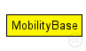
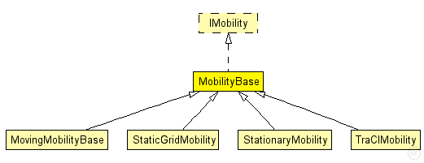

This documentation is released under the Creative Commons license
This documentation is released under the Creative Commons licenseAbstract base module for mobility models.
Author: Andras Varga
The following diagram shows usage relationships between types. Unresolved types are missing from the diagram. Click here to see the full picture.
The following diagram shows inheritance relationships for this type. Unresolved types are missing from the diagram. Click here to see the full picture.
| Name | Type | Description |
|---|---|---|
| MovingMobilityBase | simple module |
Abstract base module for mobility models. |
| StaticGridMobility | simple module |
Places all nodes in a rectangular grid. |
| StationaryMobility | simple module |
This mobility module does nothing; it can be used for stationary nodes. |
| TraCIMobility | simple module |
Used in modules created by the TraCIScenarioManager. |
| Name | Type | Default value | Description |
|---|---|---|---|
| debug | bool | false | |
| constraintAreaMinX | double | -1m/0 |
min x position of the constraint area, unconstrained by default (negative infinity) |
| constraintAreaMinY | double | -1m/0 |
min y position of the constraint area, unconstrained by default (negative infinity) |
| constraintAreaMinZ | double | -1m/0 |
min z position of the constraint area, unconstrained by default (negative infinity) |
| constraintAreaMaxX | double | 1m/0 |
max x position of the constraint area, unconstrained by default (positive infinity) |
| constraintAreaMaxY | double | 1m/0 |
max y position of the constraint area, unconstrained by default (positive infinity) |
| constraintAreaMaxZ | double | 1m/0 |
max z position of the constraint area, unconstrained by default (positive infinity) |
| Name | Value | Description |
|---|---|---|
| display | i=block/cogwheel |
// // Abstract base module for mobility models. // // @author Andras Varga // simple MobilityBase like IMobility { parameters: @display("i=block/cogwheel"); bool debug = default(false); double constraintAreaMinX @unit(m) = default(-1m/0); // min x position of the constraint area, unconstrained by default (negative infinity) double constraintAreaMinY @unit(m) = default(-1m/0); // min y position of the constraint area, unconstrained by default (negative infinity) double constraintAreaMinZ @unit(m) = default(-1m/0); // min z position of the constraint area, unconstrained by default (negative infinity) double constraintAreaMaxX @unit(m) = default(1m/0); // max x position of the constraint area, unconstrained by default (positive infinity) double constraintAreaMaxY @unit(m) = default(1m/0); // max y position of the constraint area, unconstrained by default (positive infinity) double constraintAreaMaxZ @unit(m) = default(1m/0); // max z position of the constraint area, unconstrained by default (positive infinity) }
This documentation is released under the Creative Commons license